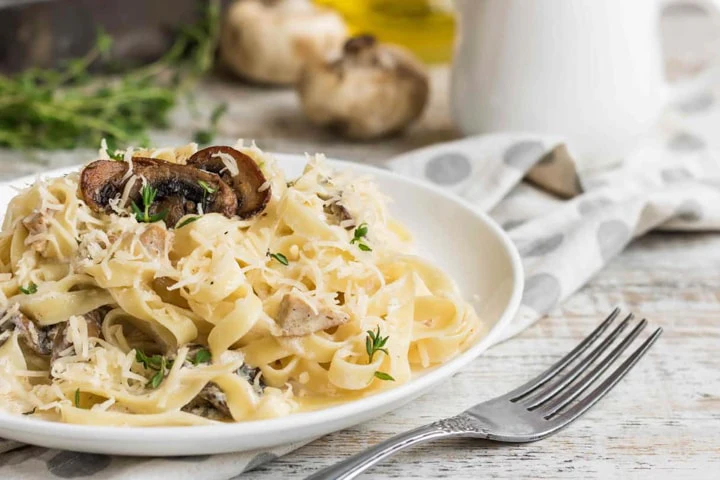

Home
Chicken and Mushroom Pasta Recipe

Description
This creamy chicken and mushroom pasta is a comforting and elegant dish that's perfect for a weeknight dinner or a special occasion. It brings together tender pieces of seasoned chicken and earthy mushrooms in a rich, velvety sauce. The creamy base, often made with garlic, Parmesan cheese, and a touch of white wine, coats every strand of pasta, creating a truly luxurious meal. This recipe is a delightful balance of savory flavors and a smooth texture that is both satisfying and simple to master. It's a crowd-pleaser that you'll want to add to your regular rotation.
Ingredients
- 1 pound boneless, skinless chicken breasts, cut into bite-sized pieces
- 1 pound fettuccine or your favorite pasta
- 2 tablespoons olive oil
- 1 large onion, finely chopped
- 8 ounces cremini or button mushrooms, sliced
- 3 cloves garlic, minced
- ½ cup dry white wine (like Chardonnay or Sauvignon Blanc)
- 2 cups heavy cream
- 1 cup chicken broth
- ¾ cup grated Parmesan cheese
- 2 tablespoons fresh parsley, chopped
- Salt and black pepper to taste
Steps
- Cook the Pasta: Cook the Pasta: Cook the pasta according to the package directions. Drain and set aside, reserving about ½ cup of the pasta water.
- Cook the Chicken: Cook the Chicken: While the pasta cooks, heat 1 tablespoon of olive oil in a large skillet or pan over medium-high heat. Season the chicken pieces with salt and pepper. Add the chicken to the skillet and cook until golden brown and cooked through. Remove the chicken from the pan and set it aside.
- Sauté Vegetables: In the same skillet, add the remaining tablespoon of olive oil. Add the chopped onion and sliced mushrooms and cook for 5-7 minutes until the mushrooms are browned and the onion is soft. Add the minced garlic and cook for one more minute until fragrant.
- Sauté Vegetables: Deglaze the Pan: Pour in the white wine and scrape up any browned bits from the bottom of the pan. Cook for 2-3 minutes until the wine has reduced slightly.
- Create the Sauce: Create the Sauce: Reduce the heat to medium. Stir in the heavy cream and chicken broth. Let the sauce simmer for 5 minutes, or until it has thickened slightly. Stir in the Parmesan cheese and the cooked chicken. Season with salt and pepper to taste.
- Combine and Serve: Combine and Serve: Add the cooked pasta to the skillet with the sauce. Toss to coat everything evenly. If the sauce is too thick, add a little of the reserved pasta water to thin it out. Sprinkle with fresh parsley and serve immediately.